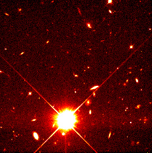

SNEWS may be your chance to make a significant contribution to science! Be the first to pinpoint a rare Galactic supernova and make early observations!

Can you spot the Supernova? Sign up and find out (someday). Photo courtesy of HubbleSite
In the event of a supernova, neutrino detectors may yield limited information about where the supernova source is (in the best case, it may be a few degrees; in the worst case there could be no pointing information at all.). Therefore amateurs, with their wide viewing capabilities, may well be the first to find the supernova and point more powerful telescopes to the event. Very early data taken by amateurs themselves may be of prime importance, too. Because Galactic supernovae are so rare (a few per century), it will be especially crucial to see the very early turn-on of the light. The time between the neutrino burst warning and the first visible light could be minutes, hours or days, depending on the nature of the stellar envelope and the amount of obscuration.
So time is of the essence! If you receive a SNEWS alert, get out there and look!
Sky and Telescope provides an AstroAlert service for notification of amateurs. It will also serve as a clearinghouse for amateur observations, so that information about the direction of a supernova can be disseminated as soon as possible to other observers, including professionals.
You may also sign up to be notified directly by SNEWS: please look here for information on how to sign up. However, we recommend that amateur observers sign up for AstroAlert, and report observations via the Sky and Telescope feedback system (the Sky and Telescope folks are experts on observational astronomy; we are primarily neutrino physicists and won't know what to do with your material!). For more information, see Sky and Telescope's articles by Leif J. Robinson: "Supernovae, Neutrinos, and Amateur Astronomers", "You May Already Have a Supernova Detector", and "Reporting and Validating a Nearby Supernova".